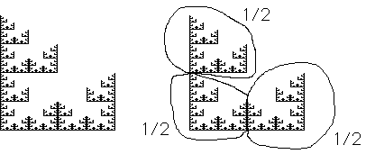

We will find the IFS rules for this fractal.
|  |
The original fractal on the left with its decomposition into three copies on the right.
Since there is no part of the fractal in the position designated by T4, there are only three transformations.
Note the top and bottom left pieces have the same orientation as the entire fractal, while the bottom right piece is reflected across a vertical line.
Keeping in mind that our transformation rules allow only reflections across the x- and y-axes, some care must be taken with the translation after the reflection.
First note all copies have been scaled by 1/2.
The copy in the T1 position has only been scaled.
The copy in the T3 position has been scaled and translated vertically by 1/2.
The copy in the T2 position has been scaled, reflected over the y-axis and translated to the right.
After reflecting over the y-axis, the scaled copy will be on the left side of the y-axis. To get it in the correct final position, it must be translated to the right by 1.
| r | s | theta | e | f | |
| T1 | .5 | .5 | 0 | 0 | 0 |
| T2 | -.5 | .5 | 0 | 1 | 0 |
| T3 | .5 | .5 | 0 | 0 | .5 |
Return to IFSLab.